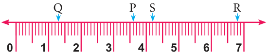

- Write the decimal numbers represented by the points P, Q, R and S on the given number line.

- Represent the following decimal numbers on the number line.
- 1.7
- 0.3
- 2.1
- Between which two whole numbers, the following decimal numbers lie?
- 3.3
- 2.5
- 0.9
- Find the greater decimal number in the following.
- 2.3, 3.2
- 5.6, 6.5
- 1.2, 2.1
- Find the smaller decimal number in the following.
- 25.3, 25.03
- 7.01, 7.3
- 5.6, 6.05
Objective type questions
- Between which two whole numbers 1.7 lie?
- 2 and 3
- 3 and 4
- 1 and 2
- 1 and 7
- The decimal number which lies between 4 and 5 is \(\underline{\qquad}\)
- 4.5
- 2.9
- 1.9
- 3.5